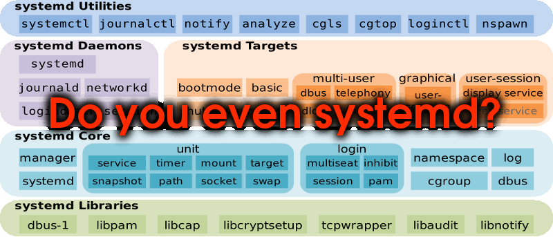
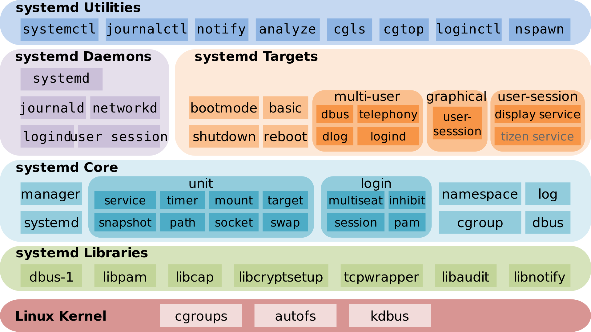

Some of these do more than just process management, like systemd which also manages the Linux init process to bootstrap the operating system.
Process Management on Linux
Learn about process management on Linux and how to do it with systemd.
On this page
Table of contents
What is process management?
Many processes must run for a computer to do its job.
Which processes to run and when to run them depends on the use case:
- On a desktop computer, you need processes to be launched to display the graphical user interface (GUI), for example.
- On a web-facing server, you probably need to run a database and a web server at least.
Some processes may have dependencies: i.e. they might need other processes to be already running in order to run properly themselves. For example, a PHP application might need a MySQL database to store some data.
Processes also need to be managed, i.e. it should be easy to start them, stop them, restart them, or to configure them to automatically restart if they crash.
Process managers
Process managers are programs that fulfill this role: i.e. make sure that the correct processes are run in the correct order and are managed correctly thereafter.
Most operating systems have a process manager built in:
| Process manager | Operating system |
|---|---|
| launchd | macOS |
| Service Control Manager (SCM) | Windows |
| systemd | Many Linux distributions |
| Unix System V init system | Unix |
Lightweight process managers
Simpler process managers also exist, meant to be used to run and manage one application. Some of them are generic while others are specific to a programming language:
| Process manager | Written in | Can run |
|---|---|---|
| God | Ruby | Any executable |
| PHP FPM | PHP | PHP programs |
| PM2 | Node.js | Node.js programs |
| Supervisor | Python | Any executable |
They are easier to use but have fewer features. For example, none of those can handle dependencies between processes.
Systemd

What is systemd?
Systemd provides not only process management, but also the fundamental building blocks of a Linux operating system, such as an init system.

Systemd is a replacement for the Unix System V init system and has been the de facto standard for most Linux distributions since 2015.
Unit files
Systemd records the instructions on how to launch and manage a process in a
configuration file referred to as a unit file. It supports
many unit file types such as service, socket, timer, etc.
The start of a unit file usually looks like this:
[Unit]
Description=Something to run
[Install]
WantedBy=something-else.target
...
[Unit] is one section in the configuration file. There will be other sections
depending on the type of unit file.
[Install] is an optional section that can be used to express dependencies
between units. Here, the WantedBy option specifies that this unit will be
started after the something-else unit has been started.
Service unit file
The unit file type that interests us is service, which will
configure, launch and manage a long-running process such as a database or
application.
A service unit file will have a [Service] section. Common options are:
| Option | Description |
|---|---|
ExecStart |
Command to run to start the service |
WorkingDirectory |
Directory in which to run the command |
User |
User to run the process as (can be used to limit access) |
And many more.
Location of unit files
Unit files are named after their type. For example, a service unit file will
be named something.service.
Systemd will look in several directories for unit files:
| Location | Description |
|---|---|
/lib/systemd/system |
Unit files installed by the operating system or by packages (e.g. a database) |
/etc/systemd/system |
Unit files installed by the system administrator |
The systemctl command
The systemctl or system control command can be used to
enable/disable and start/stop units once their configuration file is in place:
| Command | Description |
|---|---|
sudo systemctl status <unit> |
Display the current status of a unit. |
sudo systemctl enable <unit> |
Enable a new unit file. This will enable it to start on boot if it has the correct dependencies. |
sudo systemctl start <unit> |
Start a unit. |
sudo systemctl stop <unit> |
Stop a unit. |
sudo systemctl restart <unit> |
Restart (stop and start) a unit. |
sudo systemctl reenable <unit> |
Re-enable an existing unit file after its dependencies have been modified. |
sudo systemctl daemon-reload |
Reload unit files after they have been modified. |
The journalctl command
Services started with systemd have their standard output and standard error
streams collected and logged by journald, one of the default
services provided by systemd itself. The systemctl status command sometimes
shows you an excerpt of these logs.
The journalctl command allows you to read the full logs:
| Command | Description |
|---|---|
sudo journalctl -u <unit> |
Display a unit’s logs. |
sudo journalctl -f -u <unit> |
Display and follow a unit’s logs in real time. |